Шесть направлений, каждое — живые сайты реальных кафе и кофеен. Это про вайб (цвет, типографика, настроение, движение), не про копирование 1:1 — наш будет трёхъязычный, RTL и со своей структурой.
Тёмная база, кинематографичные фото процесса, минимум текста. Дорогое спокойствие: сайт ощущается как вечер в хорошем месте.
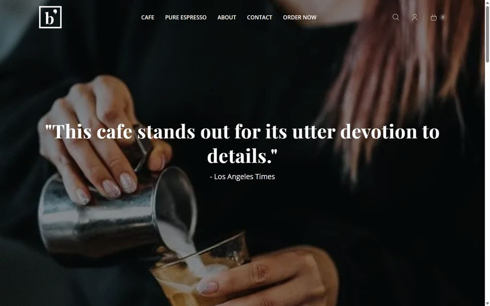
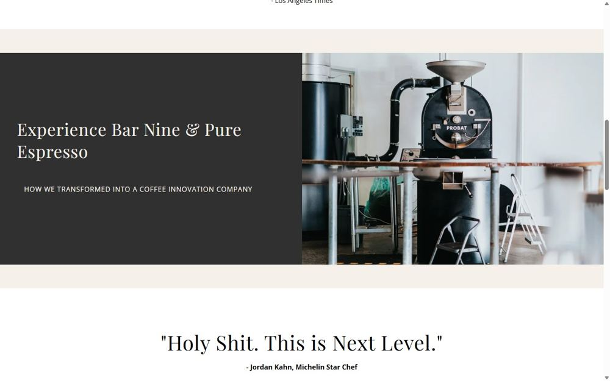
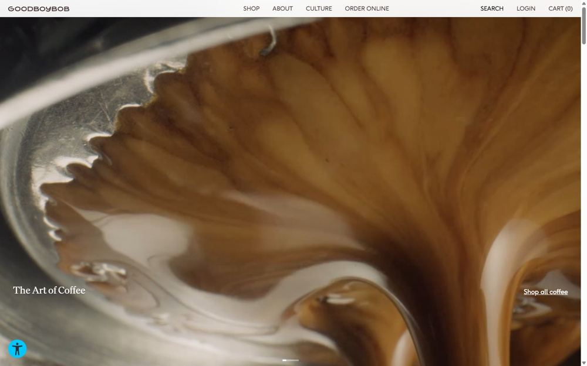
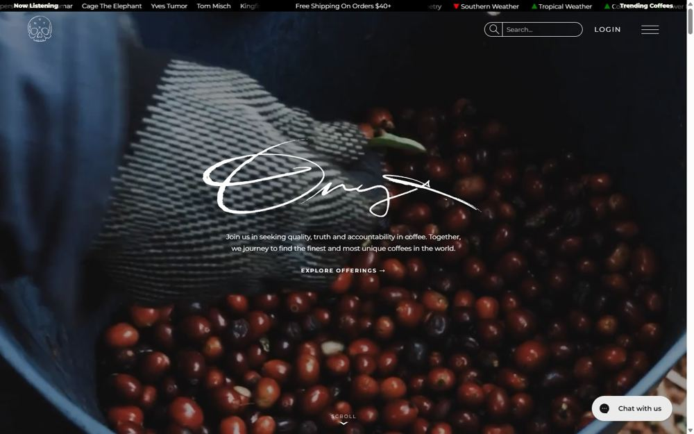
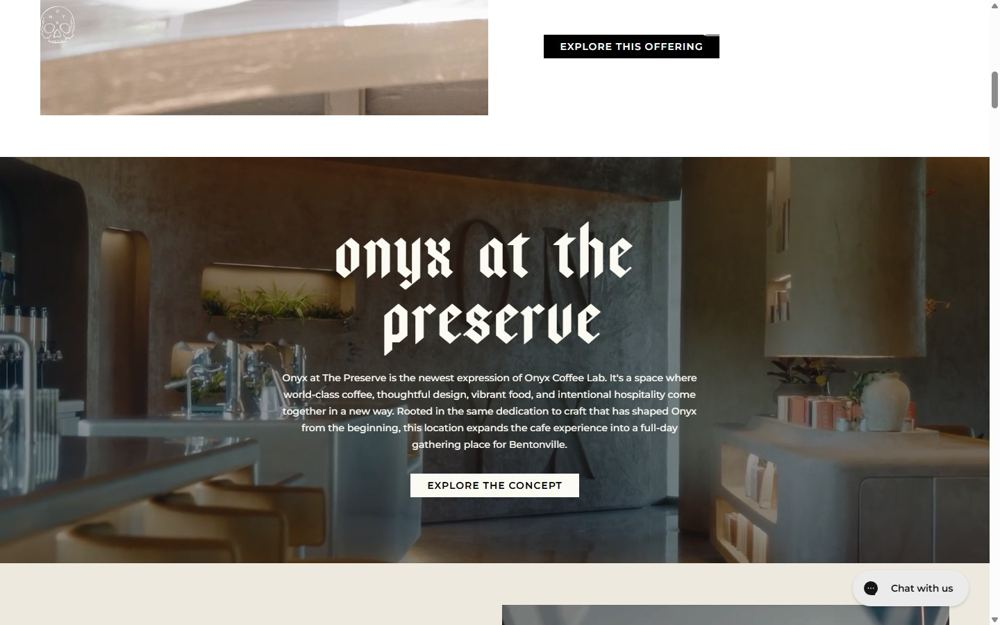
Тёмная база, но с ярким цветовым «криком» и ритмом «тёмный hero → светлые секции». Это направление ближе всего к варианту «эспрессо + кислота» из нашего брифа — здесь видно, как оно работает вживую.
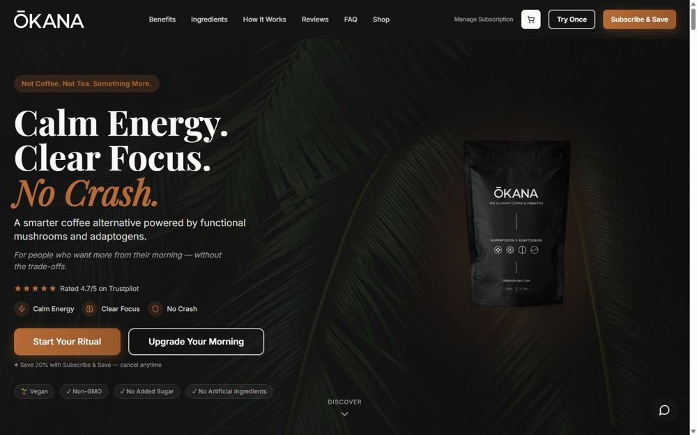
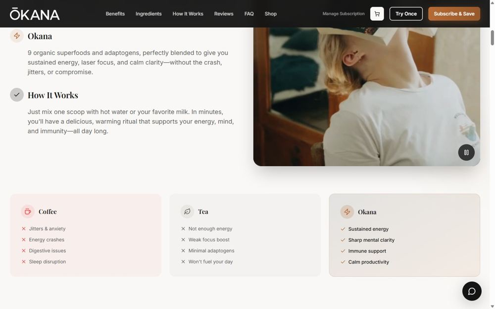
Текст и есть дизайн: разрядка, жирные гарнитуры, чёрное на белом или один кричащий цвет. Смотрится современно и очень дёшево не бывает.
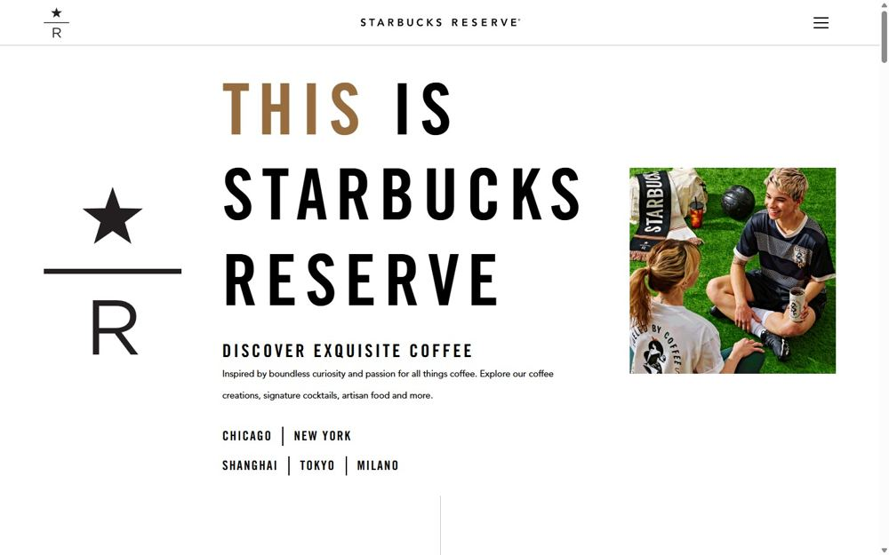
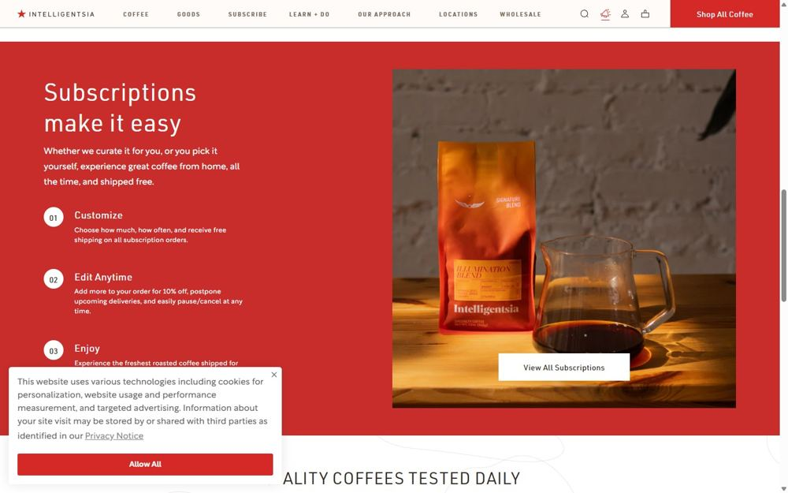
Яркие цвета, юмор, стикеры, рукописность. Кофе как культура и тусовка, а не церемония. Такое молодёжь шэрит в сторис.
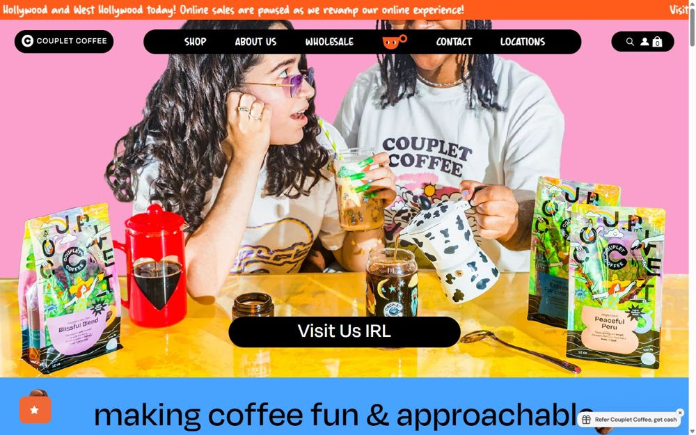
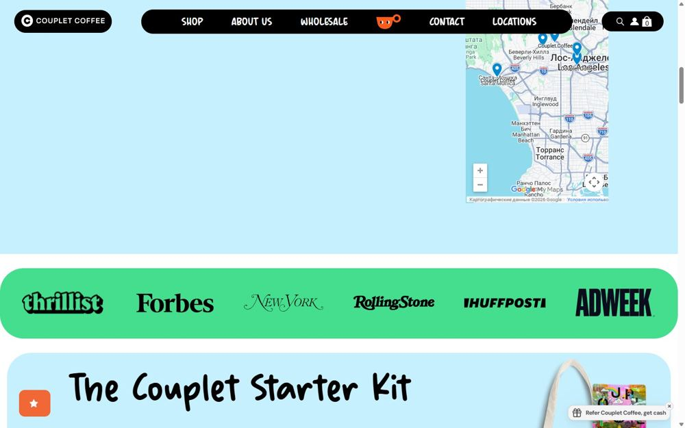
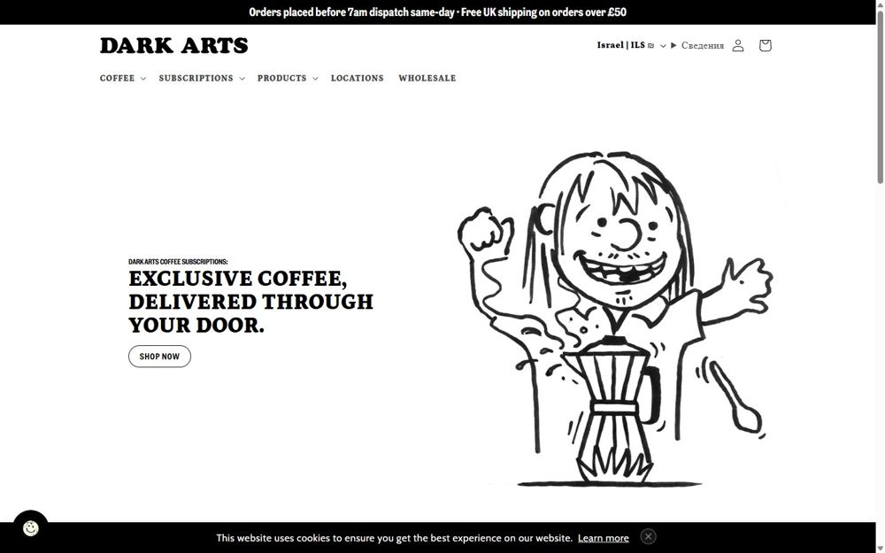
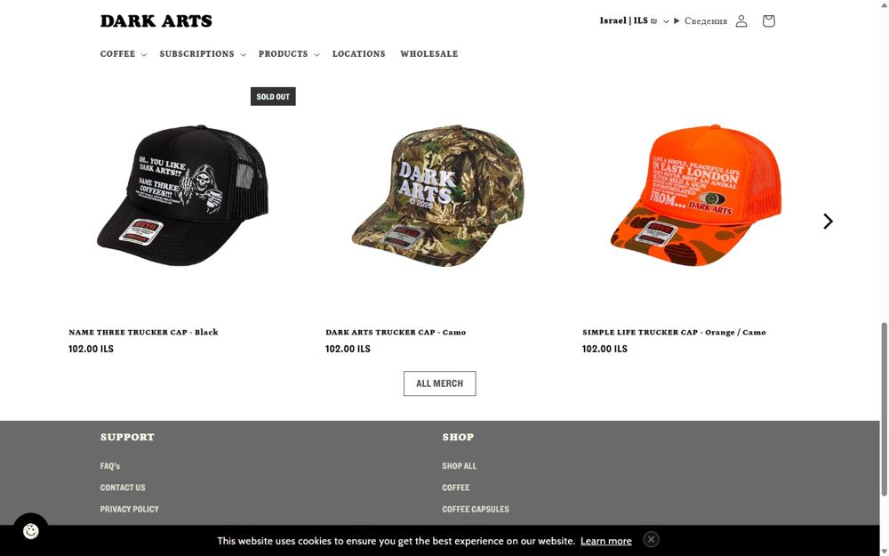
Белая/бумажная база, литературный serif, фото с характером. Спокойная альтернатива, если тёмное не зайдёт.
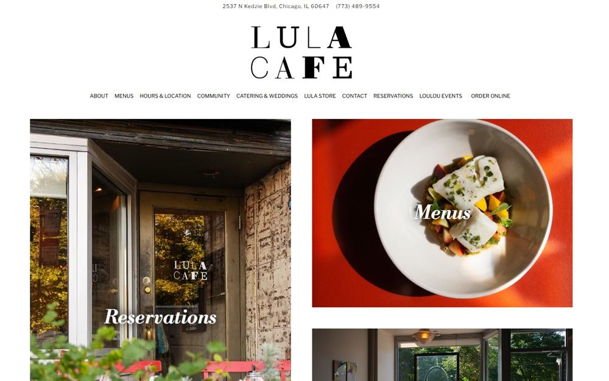
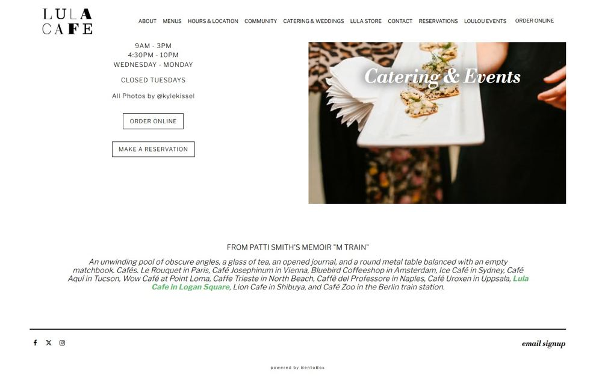
Сайт как место, по которому «ходишь». Самое близкое к твоему запросу «движущаяся анимация, крутая механика».
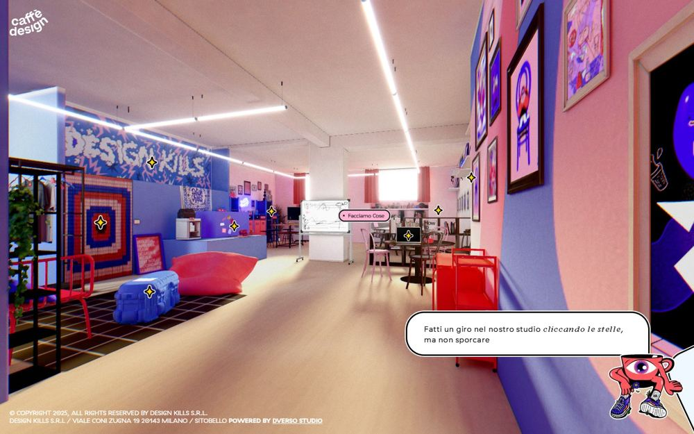